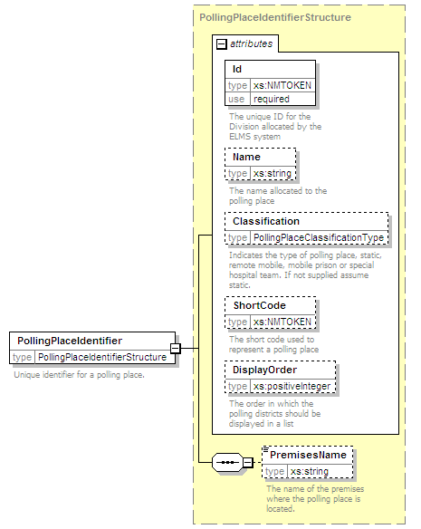

| diagram |  | ||||||||||||||||||||||||||||||||||||||||||||||
| namespace | http://www.aec.gov.au/xml/schema/mediafeed | ||||||||||||||||||||||||||||||||||||||||||||||
| type | PollingPlaceIdentifierStructure | ||||||||||||||||||||||||||||||||||||||||||||||
| properties |
|
||||||||||||||||||||||||||||||||||||||||||||||
| children | PremisesName | ||||||||||||||||||||||||||||||||||||||||||||||
| used by | |||||||||||||||||||||||||||||||||||||||||||||||
| attributes |
|
||||||||||||||||||||||||||||||||||||||||||||||
| annotation |
|
||||||||||||||||||||||||||||||||||||||||||||||
| source | <xs:element name="PollingPlaceIdentifier" type="PollingPlaceIdentifierStructure"> <xs:annotation> <xs:documentation>Unique identifier for a polling place.</xs:documentation> </xs:annotation> </xs:element> |